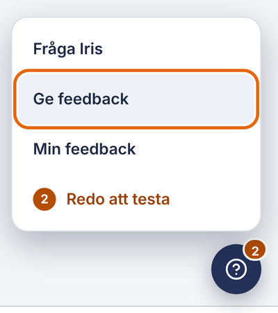
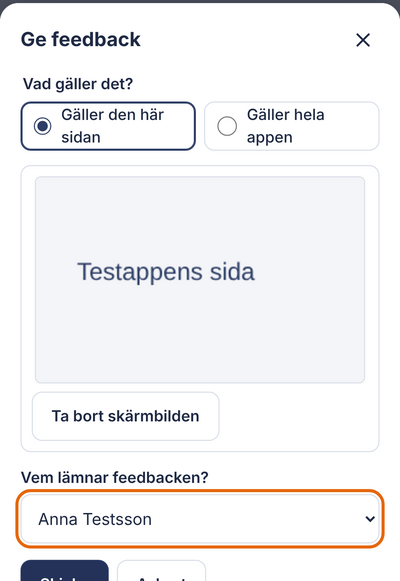
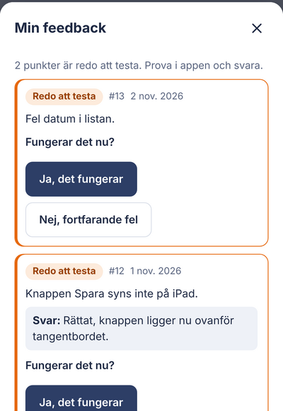

Så hänger apparna ihop
Tryck på en app för att läsa mer.
automatisktför hand (kopiera eller foto)inloggning
Varför varje app finns
Samma Hjälp-knapp i alla appar
niemis-hjalp: en knapp nere till höger med Fråga Iris och Ge feedback. Den byggs en gång och syns likadant i varje intern app.



Bilderna är från testappen, med påhittade namn.
En gemensam stil
Mörkblåbas
Ljusblåytor
Blåögat
Orangebara det viktiga
Aa
LatoSamma typsnitt i alla appar
Beslut och planer
Om du ska ta över
- Daniel beslutar. Christian har full admin. Hugo sköter IT och dataskydd.
- GitHub först, Lovable sist. Bara gratis dagliga Lovable-krediter.
- ServeIT är journalen. Våra appar kopierar till och från den.
- Rör inte CRM-nattmotorn i Kunduppföljning.
- Gjort är inte publicerat. Prova alltid i den publicerade appen.
- Lösenord finns i Nyckelvalvet, aldrig här.
- Kund- och patientdata stannar i sin app.
Ändra kartan i data/appar.json i repot Binokel-AB/appkartan. Den publiceras om automatiskt.